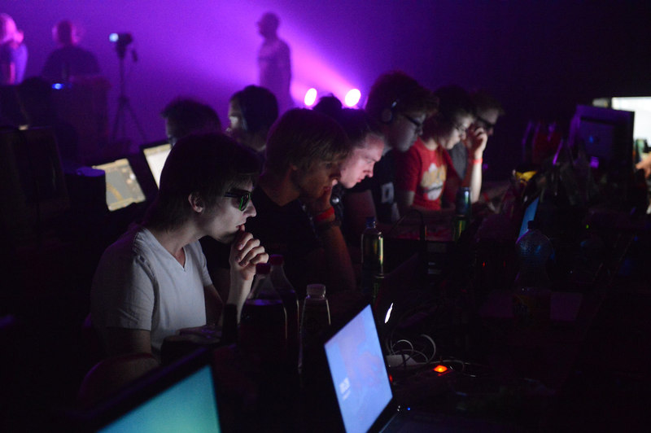
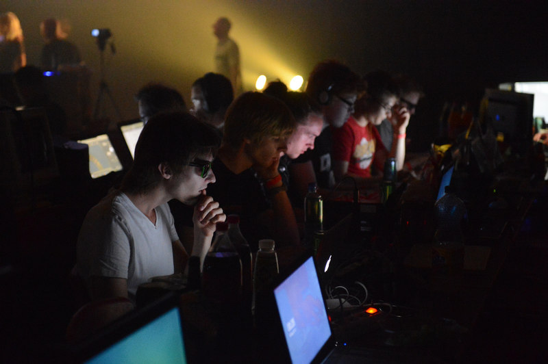

class: center, middle # The THREE.js Musketeers <span class=subtle>by Poëtene</span> --- # Dette kurset Korte oppgaver som viser grunnleggende THREE.js-konsepter. Til slutt kombinere det dere har sett til en egen kul effekt! Ha mye moro :) ??? Hver del skal de gjøre litt selv. De må gjerne finne på og tweake selv. --- # Hvem er vi? Poëtene er en interessegruppe i Abakus Vi bruker teknologi til å lage kule grafiske ting, demoer og musikk. ??? Vi går fjerde og femteklasse datateknikk. ---  ---  --- class: center # JavaScript <!-- deal with it --> <br> "Virker som Python,<br>ser ut som Java" --- <br> <br> <br> ```javascript var someString = "this is a string"; var someArray = ['foo', 'bar']; someArray[0]; /* foo */ var someObject = {x: 5, y: 9}; someObject.x; /* 5 */ ``` ??? Slik ser det ut når man lager en variabel. arrays objects --- <br> <br> <br> ```javascript var someNumber = 0; someNumber += 1; /* someNumber is now 1 */ ``` --- <br> <br> <br> ```javascript function add(number1, number2){ return number1 + number2; } add(10, 20); /* returns 30 */ ``` ??? funksjoner ser sånn ut --- # WebGL Javascript-API for 3D OpenGL i nettleseren Fungerer i moderne nettlesere (mobil & desktop) ??? WebGL er et JavaScript-API for 3D-grafikk i nettleseren. Det er basert på OpenGL Grafikken tegnes på et canvas-element (HTML5) Støttes av Firefox, Chrome, Safari, Opera, IE11 Støttes også i iOS 8 og i nye Android-versjoner --- ### Koordinatsystem i WebGL .float-left[x er bortover y er oppover z er utover ] .float-right[  ] ??? Forklar at når man ser et 2-dimensjonalt koordinatsystem på skjermen er det veldig naturlig å ha Y-aksen oppover og X-aksen bortover. WebGL er en utvidelse av dette, og har dermed Z-aksen som dybde. --- # THREE.js ### 3D blir enklere Bygd opp av: - Kamera - Scene - 3D-objekter (mesh) - Lys ??? THREE.js er et javascript-rammeverk som gjør det enkelt å jobbe med 3D i nettleseren. --- class: tiny-font ```html ... <canvas></canvas> <div id="info"></div> <script id="vs" type="x-shader/vertex"> attribute vec3 position; void main() { gl_Position = vec4( position, 1.0 ); } </script> <script id="fs" type="x-shader/fragment"> uniform float time; uniform vec2 resolution; void main( void ) { vec2 position = - 1.0 + 2.0 * gl_FragCoord.xy / resolution.xy; float red = abs( sin( position.x * position.y + time / 5.0 ) ); float green = abs( sin( position.x * position.y + time / 4.0 ) ); float blue = abs( sin( position.x * position.y + time / 3.0 ) ); gl_FragColor = vec4( red, green, blue, 1.0 ); } </script> <script> /** * Provides requestAnimationFrame in a cross browser way. * paulirish.com/2011/requestanimationframe-for-smart-animating/ */ window.requestAnimationFrame = window.requestAnimationFrame || ( function() { return window.webkitRequestAnimationFrame || window.mozRequestAnimationFrame || window.oRequestAnimationFrame || window.msRequestAnimationFrame || function( callback, element ) { window.setTimeout( callback, 1000 / 60 ); }; })(); var canvas, gl, buffer, vertex_shader, fragment_shader, currentProgram, vertex_position, parameters = { start_time : new Date().getTime(), time : 0, screenWidth : 0, screenHeight: 0 }; init(); animate(); function init() { vertex_shader = document.getElementById('vs').textContent; fragment_shader = document.getElementById('fs').textContent; canvas = document.querySelector( 'canvas' ); // Initialise WebGL try { gl = canvas.getContext( 'experimental-webgl' ); } catch( error ) { } if ( !gl ) { throw "cannot create webgl context"; } // Create Vertex buffer (2 triangles) buffer = gl.createBuffer(); gl.bindBuffer( gl.ARRAY_BUFFER, buffer ); gl.bufferData( gl.ARRAY_BUFFER, new Float32Array( [ - 1.0, - 1.0, 1.0, - 1.0, - 1.0, 1.0, 1.0, - 1.0, 1.0, 1.0, - 1.0, 1.0 ] ), gl.STATIC_DRAW ); // Create Program currentProgram = createProgram( vertex_shader, fragment_shader ); onWindowResize(); window.addEventListener( 'resize', onWindowResize, false ); } function createProgram( vertex, fragment ) { var program = gl.createProgram(); var vs = createShader( vertex, gl.VERTEX_SHADER ); var fs = createShader( '#ifdef GL_ES\nprecision highp float;\n#endif\n\n' + fragment, gl.FRAGMENT_SHADER ); if ( vs == null || fs == null ) return null; gl.attachShader( program, vs ); gl.attachShader( program, fs ); gl.deleteShader( vs ); gl.deleteShader( fs ); gl.linkProgram( program ); if ( !gl.getProgramParameter( program, gl.LINK_STATUS ) ) { alert( "ERROR:\n" + "VALIDATE_STATUS: " + gl.getProgramParameter( program, gl.VALIDATE_STATUS ) + "\n" + "ERROR: " + gl.getError() + "\n\n" + "- Vertex Shader -\n" + vertex + "\n\n" + "- Fragment Shader -\n" + fragment ); return null; } return program; } function createShader( src, type ) { var shader = gl.createShader( type ); gl.shaderSource( shader, src ); gl.compileShader( shader ); if ( !gl.getShaderParameter( shader, gl.COMPILE_STATUS ) ) { alert( ( type == gl.VERTEX_SHADER ? "VERTEX" : "FRAGMENT" ) + " SHADER:\n" + gl.getShaderInfoLog( shader ) ); return null; } return shader; } function onWindowResize( event ) { canvas.width = window.innerWidth; canvas.height = window.innerHeight; parameters.screenWidth = canvas.width; parameters.screenHeight = canvas.height; gl.viewport( 0, 0, canvas.width, canvas.height ); } function animate() { requestAnimationFrame( animate ); render(); } function render() { if ( !currentProgram ) return; parameters.time = new Date().getTime() - parameters.start_time; gl.clear( gl.COLOR_BUFFER_BIT | gl.DEPTH_BUFFER_BIT ); // Load program into GPU gl.useProgram( currentProgram ); // Set values to program variables gl.uniform1f( gl.getUniformLocation( currentProgram, 'time' ), parameters.time / 1000 ); gl.uniform2f( gl.getUniformLocation( currentProgram, 'resolution' ), parameters.screenWidth, parameters.screenHeight ); // Render geometry gl.bindBuffer( gl.ARRAY_BUFFER, buffer ); gl.vertexAttribPointer( vertex_position, 2, gl.FLOAT, false, 0, 0 ); gl.enableVertexAttribArray( vertex_position ); gl.drawArrays( gl.TRIANGLES, 0, 6 ); gl.disableVertexAttribArray( vertex_position ); } ... ``` ??? Eksempel på WebGL uten THREE.js --- class: middle ```javascript var renderer = new THREE.WebGLRenderer(); var scene = new THREE.Scene(); var view_angle = 45; var aspect = width / height; var near = 0.1; var far = 10000; var camera = new THREE.PerspectiveCamera( view_angle, aspect, near, far ); renderer.setSize(width, height); document.body.appendChild(renderer.domElement); renderer.render(scene, camera); ``` ??? Minimalt eksempel. Dette er den minste versjonen av boilerplaten du trenger. Forklar de viktigste konseptene godt, alle talla er ikke så interessante. --- demo: show-sphere <div id=show-sphere class=small-demo></div> # Legg til objekt ## Geometry ```javascript var geometry = new THREE.SphereGeometry( 50, // radius 16, // segments 16 // rings ); ``` --- <div style="width:200px; height: 200px; background: red; float: right;"></div> # Legg til objekt ## Material ```javascript var material = new THREE.MeshBasicMaterial( {color: 0xff0000} ); ``` --- demo: show-sphere-mesh <div id=show-sphere-mesh class=small-demo></div> # Legg til objekt ## Mesh ```javascript var sphere = new THREE.Mesh( geometry, material ); scene.add(sphere); ``` --- # Animasjon For å sette ting i bevegelse, må bildet tegnes mange ganger i sekundet ```javascript function animate() { requestAnimationFrame(animate); // do animation here renderer.render(scene, camera); } animate(); ``` ??? Nettleseren bestemmer hvor ofte funksjonen kalles. Vi kaller animate én gang for å starte den, resten går automatisk. --- class: center, middle # Tid ## Date.now() Millisekunder siden 1. januar 1970 --- class: middle ```javascript var initial_t = Date.now() / 1000; function animate() { requestAnimationFrame(animate); var t = Date.now() / 1000 - initial_t; // do animation here renderer.render(scene, camera); } animate(); ``` ??? Nå har vi en variabel som øker for hver frame i animasjonen. Uansett hvor ofte skjermen oppdateres øker den med én hvert sekund. Initial_t gjør at den starter på 0. --- class: center middle # Oppgaver ??? Nå kommer noen oppgaver som viser ulike ting som er kjekt å kunne. Til slutt skal dere kunne sette sammen ting dere har lært til en demo. Og så har vi konkurranse. --- demo: rotate-cube # Oppgave 1 ## Lage en roterende kube <div id=rotate-cube class=demo></div> ??? De fyller ut der det står kommentarer i koden på linken --- # Oppgave 1 ```javascript cube = new THREE.Mesh(geometry, material); ``` cube.rotation har tre properties: x, y og z ```javascript cube.rotation.x = 1; ``` --- # Oppgave 1 ## Lage en roterende kube ### http://poetene.net/threejs/effect/4 --- # LF oppgave 1 ```javascript function animate() { requestAnimationFrame(animate); var t = Date.now() / 1000 - initial_t; cube.rotation.x = t * 5; cube.rotation.z = t * 5; renderer.render(scene, camera); } ``` --- # Oppgave 2 Animer kameraet i en sirkel rundt z-aksen --- # Oppgave 2 Sett camera.position.x og .y <div style=background:white;text-align:center;height:45%> <img style=height:70% src=res/img/unit_circle.svg> </div> --- # Oppgave 2 Animer kameraet i en sirkel rundt z-aksen http://poetene.net/threejs/effect/13-camera/ --- # LF Oppgave 2 Flytt kamera ```javascript camera.position.x = DISTANCE_FROM_Z_PLANE * Math.sin(t); camera.position.y = DISTANCE_FROM_Z_PLANE * Math.cos(t); ``` --- # Oppgave 3 ## Animer mange kuber i kule baner Du kan f.eks bevege de i en sirkelbane, ∞-bane, eller i ☃-bane. --- # Oppgave 3 Et sett med kuber er tilgjengelig i ```cubes```. Disse kan animeres med: ```javascript for (var i = 0; i < cubes.length; i++) { var cube = cubes[i]; //manipulate every cube here cube.position.x = 200 * Math.sin(t + 0.5 * i); } ``` --- # Oppgave 3 ## Animer mange kuber ### http://poetene.net/threejs/effect/12 --- # Oppgave 4 ## Skybox <img src=res/img/Skybox_example.png> --- class: skybox-code-slide middle ```javascript var urlPrefix = "/static/res/skyboxes/TropicalSunnyDay_"; var directions = ["left", "right", "up", "down", "front", "back"]; var skyGeometry = new THREE.BoxGeometry(15000, 15000, 15000); var materialArray = []; for (var i = 0; i < 6; i++) { var url = urlPrefix + directions[i] + ".jpg"; materialArray.push(new THREE.MeshBasicMaterial({ map: THREE.ImageUtils.loadTexture(url), side: THREE.BackSide })); } var skyMaterial = new THREE.MeshFaceMaterial(materialArray); var skyBoxMesh = new THREE.Mesh(skyGeometry, skyMaterial); scene.add(skyBoxMesh); ``` --- # Oppgave 4 Se eksempel på http://poetene.net/threejs/effect/51 Skyboxes tilgjengelig på http://poetene.net/threejs/skyboxes/ Legg til skybox i din egen demo --- # Oppgave 5 ## Musikk ♫ ♪ ```html <audio id="music" loop> <source src="my_music.mp3" type="audio/mpeg"> </audio> ``` ```javascript music.play(); function animate() { console.log(music.currentTime); // antall sekunder } ``` --- # Oppgave 5 ## Legg opp og bruk deres egen musikk. http://poetene.net/threejs/effect/44-musikk-eksempel/ --- # Oppgave 6 ## Shaders <img src=res/img/shader_example.png alt="Shader example" style="width: 100%;" > --- # Hva er shaders? Effekter som kan: - Legges oppå et bilde, f.ex greyscale, glitching (Fragment shaders). - Endre geometrien til objekter (Vertex shaders) ??? glsl er et språk som ligner litt på c Vi skal ikke lære glsl i dag, men bruke en del ferdig skrevne shaders vi har lagd fra før --- # Bruke shaders http://poetene.net/threejs/shaders/ ```javascript var shaderPass = new THREE.ShaderPass(SHADERS.multiply); // Skriv kun dette for den siste shaderen shaderPass.renderToScreen = true; composer.addPass(shaderPass); ``` ??? Laster inn en av de ferdige shaderne våre --- # Uniforms Parametre som kan endre oppførselen til en shader Uniformen heter 'amount'; 'value' er verdien. ```javascript shaderPass.uniforms.amount.value = 1; ``` ??? Et objekt med ulike verdier som kan styres fra javascript. Shaderen bruker disse verdiene i beregningene sine --- # Shaders ## Lek dere med shaders http://poetene.net/threejs/effect/54-oppgave-6-shaders/ --- # Demo compo Lag noe kult, og vinn premie! Nå, la oss kode! Hilsen Poëtene ??? Sjekk eksemplene på nettsiden, og sett sammen noe eget Etterpå viser vi frem det dere har laget. Spør oss om hjelp